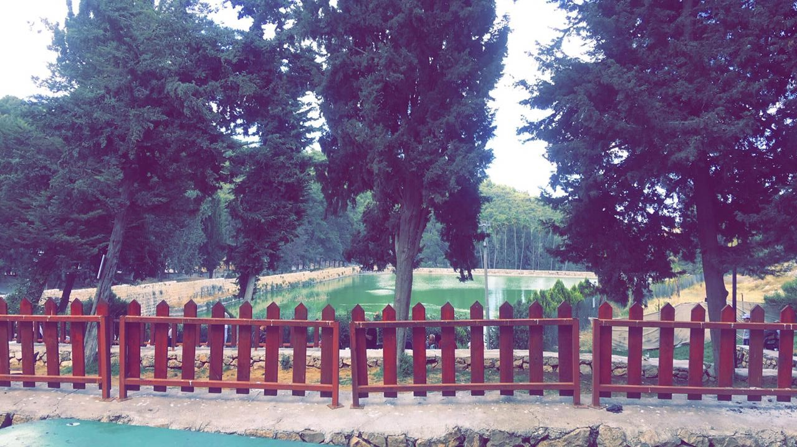

Solomon's Pools

- Find Name
- Solomon's Pools
- Description
- Three large stepped reservoirs in the Artas Valley, each about 6 m lower than the one above, partly rock-hewn and partly built of large hewn stones, with a combined capacity of roughly 230,000-340,000 cubic metres. Fed by springs, runoff and feeder aqueducts, they supplied Jerusalem's water for over 2,000 years: the Low-Level Aqueduct carried their water to cisterns beneath the Temple Mount in the late Second Temple period, the High-Level Aqueduct ran toward the Upper City, and a branch supplied Herodium. An Ottoman fortress (Murad Castle, 1618) guarded them. No verse names these pools.
- Historical Period
- Hellenistic–Roman (with Ottoman and later repairs)
- Evidence Class
- Disputed
- Interpretations
- DOUBT STATED: the name is traditional, not historical. Scholars date the oldest pool to the 2nd century BC, with Herodian and later phases — centuries after Solomon. The link to Ecclesiastes 2:6 ('I made me pools of water') is a traditional association via Josephus's picture of Solomon strolling in gardens here, not an identification: the verse names no place, and these pools cannot be Solomon's. The pools' Second Temple function as Jerusalem's water supply is, by contrast, well established.
- Alternative Names
- Burak Sulayman; Breichot Shlomo; Pools of Artas
- Related Places
- Related Books
- Related People
- Scripture Illuminated
- Biblical Significance
- The pools are the hidden infrastructure of Temple Jerusalem: without reservoirs and aqueducts like these, the pilgrim city of the Gospels could not have drunk, washed or sacrificed at scale. They illuminate the water world behind the Temple courts — the cisterns, pools and washings of Second Temple worship — even though their Solomonic name is traditional, not historical.
- Artifact Date
- c. 2nd century BC (oldest pool) - early Roman period (aqueduct masonry)
- Current Location
- In situ, near al-Khader, West Bank
- Date Discovered
- Known since antiquity; surveyed and studied in modern times
- Discovery Location
- Artas Valley, about 3.5 km south-west of Bethlehem, West Bank
- Timeline Era
- Return and Second Temple
Awaiting Review Not yet checked against scholarly sources. Treat its claims as provisional until this entry is reviewed. About verification
Last reviewed: not yet reviewed